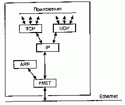
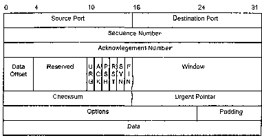
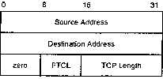

<div align="center"><center>

<table width="680" cellspacing="0" cellpadding="0">
  <tr>
    <td><hr>
<H3>Протокол TCP</H3>
TCP (Transmission Control Protocol, Протокол управления передачей) был спроектирован в качестве связующего протокола для обеспечения интерактивной работы между компьютерами. TCP обеспечивает надежность и достоверность обмена данными между процессами на компьютерах, входящих в общую сеть. TCP, с одной стороны, взаимодействует с прикладным протоколом пользовательского приложения, а с другой, с протоколом, обеспечивающим "низкоуровневые" функции: маршрутизацию и адресацию пакетов, которые, как правило, выполняет IP.
<p>В операционной системе реализация TCP представляет собой отдельный системный модуль (драйвер), через который, как правило, проходят все вызовы функций протокола. Интерфейс между прикладным процессом и TCP представляет собой библиотеку вызовов, такую же как библиотека системных вызовов, например, для работы с файлами. Вы можете открыть или закрыть соединение (как открыть или закрыть файл) и отправить или принять данные из установленного соединения (аналогично операциям чтения и записи файла). Вызовы TCP могут работать с прикладным приложением в асинхронном режиме. Безусловно, реализация TCP в каждой системе может осуществлять множество собственных функций, но любая из этих реализации должна обеспечивать минимум функциональности, которая требуется стандартами TCP.
<p>Схема работы пользовательского приложения с TCP, в общих чертах, состоит в следующем. Для передачи данных пользовательскому процессу надо вызвать соответствующую функцию TCP, с указанием на буфер передаваемых данных. TCP упаковывает эти данные в сегменты своего стека и вызывает функцию передачи протокола нижнего уровня, например IP.
<p>На другом конце, получатель TCP группирует поступившие от протокола нижнего уровня данные в принимающие сегменты своего буфера, проверяет целостность данных, передает данные пользовательскому процессу и уведомляет отправителя об их получении.
<p>Пользовательский интерфейс с TCP может выполнять такие команды как открыть (OPEN) или закрыть (CLOSE) соединение, отправить (SEND) или принять (RECEIVE) данные, или получить статус соединения (STATUS). Эти вызовы подобны любым другим вызовам функций операционной системы из пользовательской программы, таким как открытие, чтение или закрытие файла.
<p>В модели межсетевого соединения взаимодействие TCP и протоколов нижнего уровня, как правило, не специфицировано, за исключением того, что должен существовать механизм, который обеспечивал бы асинхронную передачу информации от одного уровня к другому. Результатом работы этого механизма является инкапсуляция протокола более высокого уровня в тело протокола более низкого уровня. Реализуется этот механизм через интерфейс вызовов между TCP и IP.
<p>В результате работы этого механизма каждый TCP-пакет вкладывается в "конверт" протокола нижнего уровня, например, IP. Получившаяся таким образом дейтаграмма содержит в себе TCP-пакет так же как TCP-пакет содержит пользовательские данные.
<p>Простейшая модель работы TCP-протокола выглядит обманчиво гладко, поскольку на самом деле реальная работа изобилует множеством деталей и тонкостей.
<p>Логическая структура сетевого программного обеспечения, реализующего протоколы семейства TCP/IP в каждом узле сети Internet, изображена на рис. 2.12.
<p>Прямоугольники обозначают обработку данных, а линии, соединяющие прямоугольники, - пути передачи данных. Горизонтальная линия внизу рисунка обозначает кабель сети Ethernet, которая используется в качестве примера физической среды. Понимание этой логической структуры является основой для понимания всей технологии TCP/IP.
 
<p><br>Рис. 2.12.Структура сетевого программного обеспечения семейства протоколов TCP/IP
<p>Далее более подробно рассмотрим возможности, принципы построения и основные функции протокола TCP:
<LI>Потоки данных, стек протоколов, механизм гнезд и мультиплексирование соединений
<LI>Процедура установления соединения и передача данных
<LI>Механизмы обеспечения достоверности передаваемых данных
<LI>Механизм контроля потока данных
<LI>Флаг важности пакета, средства обеспечения безопасности протокола

<p><H3>Потоки данных, стек протоколов, механизм гнезд и мультиплексирование соединений</H3>
<p>Для установления соединения между двумя процессами на различных компьютерах сети необходимо знать не только Internet-адреса компьютеров, но и номер ТСР-порта, который процесс использует на данном компьютере. В совокупности с Internet-адресом компьютера порты образуют систему гнезд (sockets). Пара гнезд уникально идентифицирует каждое соединение или поток данных в сети Internet, а порт обеспечивает независимость каждого ТСР-канала на данном компьютере. Безусловно, несколько процессов на машине могут использовать один и тот же ТСР-порт, но с точки зрения удаленного процесса между этими процессами не будет никакой разницы.
<p>Рассмотрим потоки данных, проходящие через протоколы. При использовании протокола TCP данные передаются между прикладным процессом и модулем TCP. Типичным прикладным процессом, использующим протокол TCP, является модуль FTP (File Transfer Protocol, Протокол передачи фай-лов). Стек протоколов в этом случае будет FTP/TCP/IP/ENET. При использовании протокола UDP (User Datagram Protocol, Протокол дейтаграмм пользователя) данные передаются между прикладным процессом и модулем UDP. Например, SNMP (Simple Network Management Protocol, Простой протокол управления сетью) пользуется транспортными услугами UDP. Его стек протоколов выглядит так: SNMP/UDP/IP/ENET.
<p>Одно гнездо на компьютере может быть задействовано в соединениях с несколькими гнездами на удаленных компьютерах. Кроме того, одно и то же гнездо может передавать поток данных в обоих направлениях. Таким образом, механизм гнезд позволяет на одном компьютере одновременно работать нескольким приложениям и уникально идентифицирует каждый поток данных сети. Это называется мультиплексированием соединений.
<p>Модули TCP, UDP и драйвер Ethernet являются мультиплексорами типа n x 1. Действуя как мультиплексоры, они переключают несколько входов на один выход. Они также являются демультиплексорами типа 1 х n. Как демультиплексоры, они переключают один вход на один из многих выходов в соответствии с полем типа в заголовке протокольного блока данных. Когда Ethernet-кадр попадает в драйвер сетевого интерфейса Ethernet, он может быть направлен либо в модуль ARP, либо в модуль IP. (Значение поля типа в заголовке кадра указывает, куда должен быть направлен Ethernet-кадр).
<p>Если IP-пакет попадает в модуль IP, то содержащиеся в нем данные могут быть переданы либо модулю TCP, либо UDP, что определяется полем "Protocol" в заголовке IP-пакета. Если TCP-сообщение попадает в модуль TCP, то выбор прикладной программы, которой должно быть передано сообщение, осуществляется на основе значения поля "порт" в заголовке TCP-сообщения.
<p>Мультиплексирование данных в обратную сторону осуществляется довольно просто, так как из каждого модуля существует только один путь вниз. Каждый протокольный модуль добавляет к пакету свой заголовок, на основании которого машина, принявшая пакет, выполняет демультиплексирование.
<p>Назначение портов приложениям на каждом компьютере происходит независимо друг от друга. TCP может самостоятельно выбирать порт, с которым будет работать приложение, или приложение укажет, с каким портом на данном компьютере оно будет работать. Однако, как правило, часто используемые приложения - сервисы используют одни и те же номера портов, которые уже стали общеизвестными, например, такие как HTTP, FTP, SMTP и др., для того, чтобы к данному процессу на компьютере можно было присоединиться, указывая только адрес машины. Например, Internet браузер, если ему не указать дополнительно, ищет по указанному адресу приложение, работающее с портом 80, - это наиболее распространенный порт для серверов WWW.
<p>Кроме того, машина может быть снабжена несколькими сетевыми интерфейсами, тогда она должна осуществлять мультиплексирование типа п х т, т. е. между несколькими прикладными программами и сетевыми интерфейсами.

<p><H3>Установление соединения и передача данных</H3>
<p>Соединение определяется вызовом команды OPEN с аргументами в виде номера локального порта и гнезда (IP-адрес + порт) удаленного процесса. Функция OPEN вызывается и в том случае, когда данный процесс намерен передавать информацию (активный OPEN), и когда процесс ожидает поступления информации (пассивный OPEN). Функция возвращает идентификатор соединения, по которому пользователь может ссылаться в своих последующих вызовах. Идентификатор соединения указывает на структуру данных, в которой хранятся переменные и информация данного TCP-соединения. Эта структура данных называется Управляющая Структура Передачи - Transmission Control Block (TCB).
<p>ТСВ хранит такие параметры соединения, как адреса локального и удаленного гнезд, указатели на полученные и отправляемые пользовательские данные, указатели на очередь блоков для повторной отправки, номер текущего сегмента и т. д., то есть всю информацию, используемую данным соединением.
<p>Как уже отмечено выше, открытие соединения может быть активным и пассивным. Пассивное открытие обозначает, что процесс ожидает поступления сигнала открытия соединения и не пытается открыть канал самостоятельно. Иными словами, канал, открытый с одного конца как пассивный, ожидает инициирующего сигнала от какого-либо из хостов. Этот тип открытия канала используется процессами, которые предоставляют свой сервис через заранее известный номер своего порта (например, HTTP, SMTP и т. д.) и работают с механизмом общеизвестных гнезд.
<p>Процесс может вызвать функцию пассивного открытия канала и ждать получения сигнала активного открытия канала от другого процесса, и только после получения такого сигнала соединение будет установлено. Соединение будет так же установлено, если два процесса активно откроют канал навстречу друг другу. Эта гибкость в установлении соединения особенно важна в распределенных сетях, когда компьютеры работают асинхронно.
<p>Только в двух случаях принципиально важно, чтобы гнездо на данном компьютере было открыто как пассивное, а на другой стороне как активное:
<br>1. Когда локальное пассивное открытие соединения полностью определяет гнездо на другой стороне.
<br>2. Локальное пассивное открытие гнезда не предполагает каких-либо ограничений на гнездо с другой стороны, т. е. любое гнездо может присоединиться к данному сервису.
<p>Если у вас на одном гнезде открыто пассивно, с соответствующими записями ТСВ, несколько соединений, то при открытии активного соединения на другом конце будет задействовано ТСВ, соответствующее параметрам, заданным активным гнездом. Если такого не существует, выбирается любое другое открытое гнездо.
<p>Процедура установления соединения использует специальный флаг синхронизации - SYN и состоит из трех этапов обмена сообщениями - так называемое "трехходовое квитирование". Использование именно трех тактов квитирующих сообщений всегда достаточно, чтобы синхронизировать потоки данных.
<p>Инициализация соединения начинается с обмена пакетами, которые отправляются при открытии канала пользователем, например, командой OPEN, и содержат флаг SYN и свой начальный порядковый номер пакетов данных. После этого гнезда ожидают пакет с ТСВ-партнера. Соединение считается установленным, когда в обоих направлениях синхронизируются нумерующие последовательности передаваемых пакетов, т. е. и клиент и сервер "знают", пакет с каким номером поступит с противоположного конца соединения.
<p>Соединение закрывается, когда гнезда обмениваются пакетами, содержащими команду FIN. При этом все ресурсы системы, занятые ТСВ-данных соединений, должны быть освобождены.
<p>Вообще говоря, TCP сам определяет, как группировать и когда отправлять очередной блок данных. Однако в некоторых случаях, пользователю необходимо быть уверенным, что все данные, переданные на уровень TCP, отправлены. Для этих целей существует функция "проталкивания пакета" - PUSH-функция. Вызов этой функции позволяет проконтролировать отправку всех буферизированных TCP-протоколом данных.
<p><u>Примечание:</u><br>Под словом "пользователь" здесь и далее будет пониматься пользовательский процесс или приложение, которое работает с TCP.
<p>Пользователь, отправляющий пакет вызовом SEND, указывает, передаются ли в сегменте или в предшествующих сегментах данные немедленно, или при передаче будет использоваться механизм кэширования данных, тогда данные будут отправляться в соответствии с установками системы. Когда же TCP получает пакет с флагом PUSH, а этот флаг устанавливается PUSH-функцией, вся кэшированная информация, вне зависимости от того, сформирована она одним вызовом команды SEND или несколькими, будет немедленно отправлена получателю.
<p>Назначение PUSH-функции и PUSH-флага состоит только в "проталкивании" данных к пользователю, минуя механизм кэширования. Команда PUSH не производит никаких дополнительных группировок или других действий над данными.
<p>Следует отметить, что существует взаимосвязь между PUSH-функцией и использованием буферов данных, используемых как TCP, так и пользовательским интерфейсом. Всякий раз, когда с данными, помещенными в пользовательский буфер получателя, ассоциирован PUSH-флаг, буфер немедленно передается пользователю, даже если он не заполнен до конца. Если данные заполнили буфер до получения PUSH-флага, эти данные передадутся пользователю в размере целого буфера.
<p><H3>Механизмы обеспечения достоверности передаваемых данных</H3>
<p>Протокол ТСР должен уметь работать с поврежденными, потерянными, дублированными или поступившими с изменением порядка пакетами. Это достигается благодаря механизму присвоения порядкового номера каждому передаваемому пакету данных и механизму проверок получения пакетов подтверждения доставки.
<p>Когда TCP передает сегмент данных, копия этих данных помещается в очередь повтора передачи и запускается таймер ожидания подтверждения. Когда система получает подтверждение - сегмент TCP, содержащий управляющий флаг АСК, что этот пакет данных получен, она удаляет его из очереди. Сегмент подтверждения получения содержит номер полученного сегмента, на основании которого и происходит контроль доставки данных адресату. Если подтверждение не поступило до истечения срока таймера, пакет отправляется еще раз. Уведомление TCP о получении пакета данных еще не означает, что он был доставлен конечному пользователю. Оно только означает, что TCP выполнил возложенные на него функции.
<p>При передаче информации каждому байту данных присваивается порядковый номер, поэтому, в какой бы последовательности эти пакеты не достигали точки назначения, они всегда будут собраны в изначально заданной последовательности. Порядковый номер первого байта данных в передаваемом сегменте называется порядковым номером сегмента. Нумерация проводится "с головы состава", т. е. от заголовка пакета. TCP-пакет также содержит "подтверждающий номер" (acknowledgment number), который представляет собой номер следующего ожидаемого пакета данных передачи в обратном направлении. Иными словами, номер обозначает: "до сих пор я все получил". Механизм с использованием "подтверждающего номера" позволяет исключать дублирование пакетов при повторной отправке недоставленных данных.
<p>Кроме определения порядка следования информационных пакетов, "порядковый номер" играет большую роль в механизме синхронизации соединения и контроле потерянных пакетов при разрывах соединения. Однако необходимо помнить, что величина счетчика - нумератора все же ограничена. Пакеты могут нумероваться числами от 0 до 2(32-1). Таким образом, все арифметические операции со счетчиком пакетов производятся по модулю 232. Это не означает, что гнезда, в процессе соединения, могут обмениваться только ограниченным количеством пакетов. Поскольку в процессе обмена получатель и отправитель знают предыдущий, последующий номера пакетов и длину пакета, а эти величины хранятся в структуре ТСВ при образовании соединения, все операции сравнения по модулю 232 проводятся корректно.
<p>Здесь стоит сказать несколько слов о механизме предотвращения появления в сети пакетов с одинаковыми номерами. Они могут появиться, например, при установлении и быстром сбросе соединения или при сбросе соединения и его быстром восстановлении, т. е. когда номер испорченного пакета может сразу использоваться новым пакетом данных. Механизм предотвращения подобных ситуаций основан на генерировании начального числа последовательности пакетов, а поскольку счетчик циклический, то не все ли равно, с какого места начинать отсчет.
<p>Так, при установлении нового соединения генерируется 32-битное число ISN (Initial Sequence Number). Генератор использует 32 младших разряда машинного таймера, который меняется каждые 4 микросекунды (полный цикл - 4,55 часа). Это число и служит отсчетом нумератора пакетов. Кроме того, каждая дейтаграмма в сети имеет ограниченное время жизни MSL - Maximum Life Time, которое значительно меньше периода генератора. Таким образом, в сети гарантируется невозможность возникновения конфликтов пакетов с одинаковыми номерами.
<p>Поврежденные пакеты отсеиваются механизмом проверки величины контрольной суммы данных, которая размещается в каждом передаваемом пакете.
<p><H3>Механизм контроля потока данных</H3>
<p>Протокол TCP позволяет получателю последовательности пакетов регулировать передаваемый отправителем поток данных. Этот механизм основан на том, что при передаче флага подтверждения получения пакета (АСК) в ТСР-сегменте передается размер буфера данных, который может быть передан отправителем, не дожидаясь разрешения на отправку очередной порции данных от получателя. Иными словами - передается размер свободного места в стеке протокола, куда записываются только что принятые и ожидающие дальнейшей обработки данные. Из стека данные обрабатываются и передаются соответствующим процессам. Этот механизм позволяет избегать "пробок" при передаче данных между системами различной производительности.
<p>"Окно" задается в количестве байт, отсчитываемых от номера байта, заданного в поле номера пакета "подтвержденного получения" (acknowledgment number) данных. Нулевой размер окна означает для отправителя команду приостановить передачу до готовности принимать данные получателем. Необходимо заметить, что в этом случае отправитель посылает однобайтные пакеты и на основании информации пакетов подтверждения возобновляет или нет дальнейшую передачу данных.
<p>Безусловно, большой размер окна позволяет передавать данные быстрее, поскольку отправителю пакета не нужно ждать сигнала готовности приема от получателя. Однако в случае сбоя передачи, соответственно, возрастет объем данных, которые нужно отправить заново. При небольшом же размере окна сбойные сегменты данных можно локализовать с минимальными потерями.
<p>Механизм контроля потока данных позволяет TCP влиять на изменение размера "окна" передачи. Это, в свою очередь, помогает значительно оптимизировать скорость достоверного обмена данных между процессами в гетерогенных сетях Internet.

<p><H3>Флаг важности пакета, средства обеспечения безопасности протокола</H3>
<p>Протокол TCP наследует все параметры секретности и приоритетности пакета, используемые IP и позволяет работать с ними для обеспечения собственной безопасности. В TCP-спецификации термин "секретность и изолированность" обозначает безопасность соединения, изолированность потоков данных и другие ограничения, которые обеспечивает IP.
<p>Кроме того, TCP поддерживает некоторые дополнительные механизмы, которые поддерживаются специальным аппаратным и программным обеспечением TCP.
<p>Для того чтобы TCP мог полностью реализовать свои возможности работы с иерархией приоритетных пакетов и информацией различного уровня секретности, необходима также поддержка этих возможностей и со стороны протоколов высокого уровня, и самих пользовательских приложений, и операционных систем.
<p>Кроме наследуемых от IP-параметров, TCP имеет в своем распоряжении механизм работы с флагом важности пакетов - URG. Этот механизм позволяет отправителю "настоятельно сообщать" получателю о том, что тот или иной пакет содержит срочную информацию и позволяет получателю сигнализировать, когда вся срочная информация им получена. Такой механизм уведомления, т. е. манипулирование с URG-флагом TCP-пакета используется, например, при обработке асинхронных событий.

<p><H3>Состав и предназначение полей заголовка</H3>
<p>ТСР-сегменты отправляются как IP-дейтаграммы. Заголовок TCP, следующий за IP-заголовком, содержит информацию TCP-протокола (рис. 2.13).
<p><b>Source Port</b> (16 бит). Порт отправителя.
<p><b>Destination Port</b> (16 бит). Порт получателя.
<p><b>Sequence Number</b> (32 бита). Номер кадра. Номер кадра первого октета данных в этом сегменте (за исключением пакета, где присутствует флаг SYN). Если в пакете присутствует флаг SYN, то номер данного пакета становится номером начала последовательности (ISN) и номером первого октета данных становится номер ISN+1.
<p><br>Рис. 2.13. Заголовок TCP-пакета
<p><b>Acknowledgment Number</b> (32 бита). Поле номера кадра подтвержденного получения. Если пакет содержит установленный контрольный бит АСК, то это поле содержит номер следующего пакета данных отправителя, который ожидает получатель. При установленном соединении пакет подтверждения отправляется всегда.
<p><b>Data Offset</b> (4 бита). Поле величины смещения данных. Оно содержит количество 32-битных слов заголовка TCP-пакета. Это число определяет смещение расположения данных в пакете.
<p><b>Reserved</b> (6 бит). Резервное поле. Поле зарезервировано. 
<p>Флаги управления (слева направо):
<p>URG:   Флаг срочности
<br>АСК:   Флаг пакета, содержащего подтверждение получения
<br>PSH:   Флаг форсированной отправки
<br>RST:    Переустановка соединения
<br>SYN:   Синхронизация чисел последовательности
<br>FIN:    Флаг окончания передачи со стороны отправителя
<p><b>Window</b> (16 бит). Окно. Это поле содержит количество байт данных, которое отправитель данного сегмента может принять, отсчитанное от номера байта, указанного в поле Acknowledgment Number.
<p><b>Checksum</b> (16 бит). Поле контрольной суммы. Это поле содержит 16 бит суммы побитных дополнений 16-битных слов заголовка и данных. Если сегмент содержит нечетное число байт заголовка и данных, последний байт дополняется справа нулями. При вычислении контрольной суммы поле контрольной суммы полагается равным нулю.
<p><b>Urgent Pointer</b> (16 бит). Поле указателя срочных данных. Это поле содержит значение счетчика пакетов, начиная с которого следуют пакеты повышенной срочности. Это поле принимается во внимание только в сегментах с установленным флагом URG.
<p><b>Options</b>. Поле дополнительных параметров: может быть переменной длины.
<p><b>Padding.</b> Заполнение: переменная длина. Заполнение (нулями) TCP-заголовка используется для выравнивания его по 32-битному слову.

<p><H3>Псевдозаголовок</H3>
<p>Между TCP-заголовком и IP-заголовком располагается так называемый псевдозаголовок (рис. 2.14). Он состоит из IP-адреса отправителя (Source Address), IP-адреса получателя (Destination Address), типа протокола (PTCL) и длины TCP-пакета (TCP Length). Он предназначен для "страховки" неправильной маршрутизации TCP-пакета. Информация, расположенная в этом заголовке передается TCP от IP-протокола как аргумент или результат обработки вызова IP-функции.
<p>
<br>Рис. 2.14. Формат псевдозаголовка
<br>Более подробное описание протокола TCP можно найти в RFC-793, RFC-1180.
<p>--------------------------------------------------
<br><H3>Использован источник C. Золотов "Протоколы Internet" 1998г. без изменений.</H3>

    </td>
  </tr>
</table>
</center></div>
